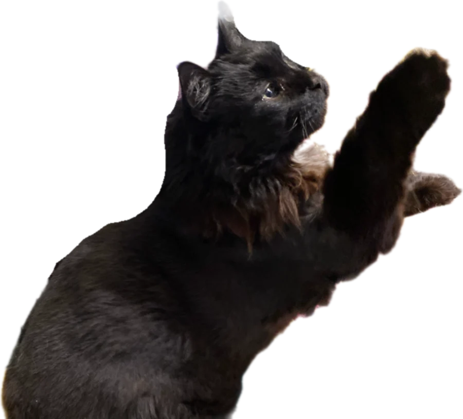

Tuba's Corner
population: one cat
“Where were you when I laid the foundations of the earth? Tell me, if you have understanding.”
— God to Job, Job 38:4


 PIA
PIA
population: one cat
“Where were you when I laid the foundations of the earth? Tell me, if you have understanding.”
— God to Job, Job 38:4
